People
The lab is built on a shared love for the natural world. We combine field expeditions, wet-lab experiments, molecular methods, and computational biology.
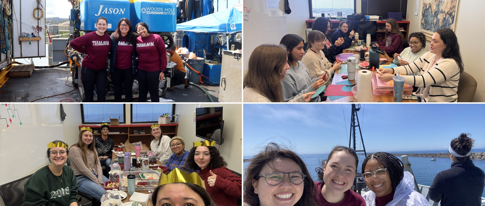
Principal investigator
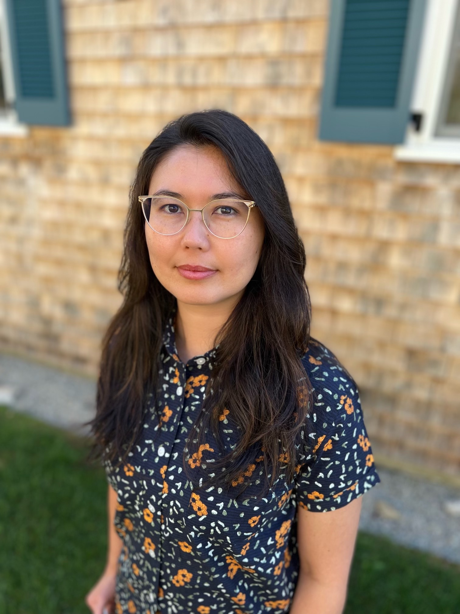
Dr. Sarah K Hu
Assistant Professor
skhu [at] tamu.edu · she/her · cv
I am a microbial ecologist devoted to figuring out what the weird marine microeukaryotes are doing in the ocean. Our work combines field expeditions, wet-lab experiments, molecular methods, and computational biology to address questions about the ecological roles microorganisms play in the ecosystem.
I’m most excited about research in the deep sea, especially biologically rich habitats like hydrothermal vents. I love teaching and mentoring about all things biological oceanography, coding, and more.
Graduate students
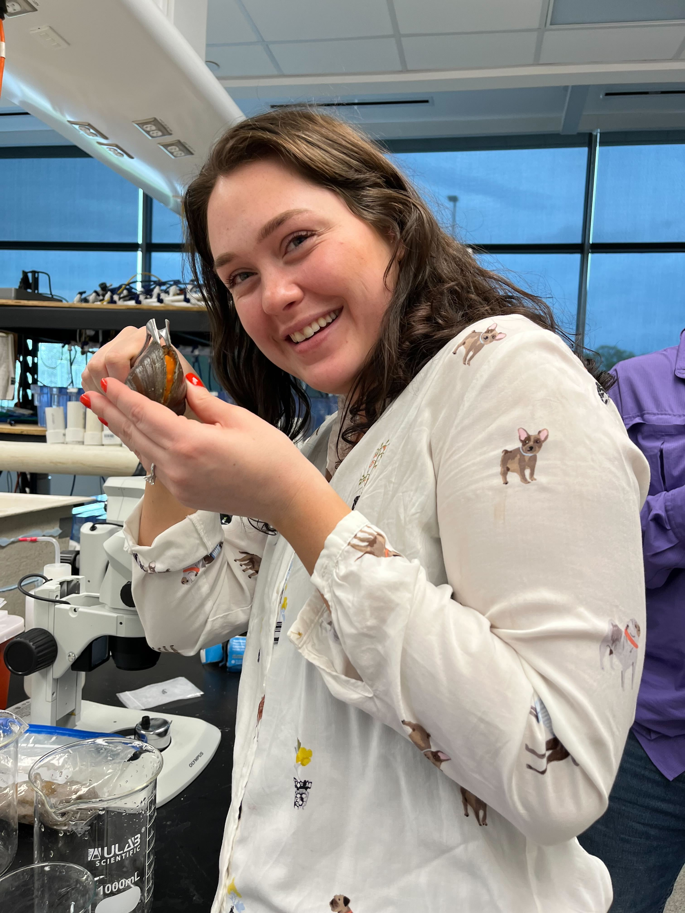
Alexis Adams
PhD student
alexis98adams [at] tamu.edu · she/her
My name is Alexis and I am a PhD student here at Texas A&M! With a passion for understanding how ecological interactions impact the world around us I have dedicated myself to studying unicellular eukaryotes and their important role within the deep ocean. When I’m not working you can find me reading or playing my piano. I believe science should be a safe space for all and I am excited to explore the fascinating world of microbes!
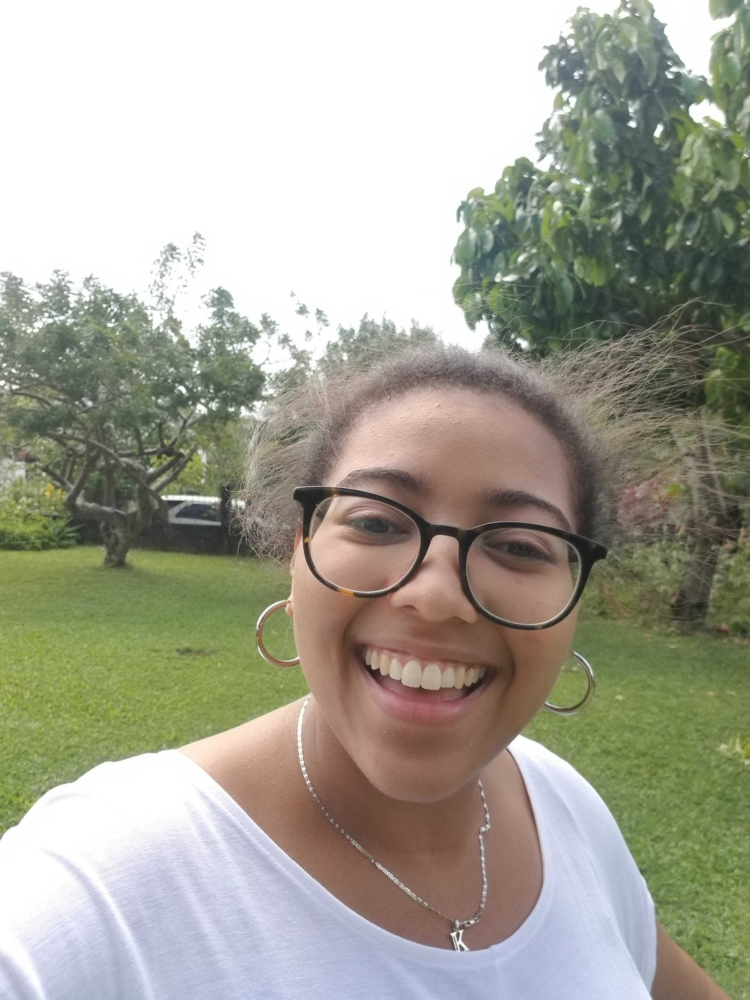
Kayla Nedd
Masters student
knedd [at] tamu.edu · she/her
My name is Kayla Nedd. I joined the Hu lab in the summer of 2023 as a PhD student. My research interests are microbial ecology in extreme environments. I would like to understand what allows these microbes to be so well equipped to handle the intense conditions of the deep sea. In 2023, I participated in my first research cruise to Axial Seamount, an underwater volcano, to study protists in deep-sea hydrothermal vents. I am thrilled to delve further into my research and better understand this truly magnificent aspect of our planet.
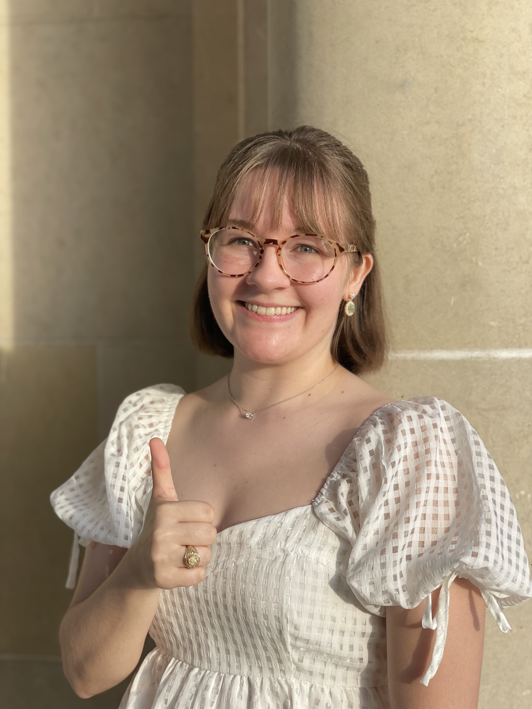
Hailey Woodward
PhD student
haileymwwd [at] tamu.edu · she/her
My name is Hailey and I am excited to be back at A&M as a PhD student after receiving my Bachelors in Microbiology in 2023. I love all things microbiology, especially marine microbes, what they get up to, and their interactions with other organisms in the ocean over time. As a first-gen, low-income student, I hope to encourage students with a background like mine to pursue science and research! In my free time, I love to read and knit, often at the same time.
Undergraduate researchers
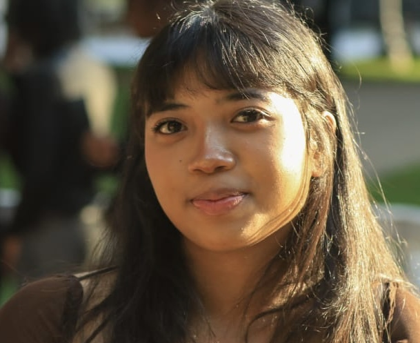
Hana Blair
Undergraduate researcher
hanab8 [at] tamu.edu
My name is Hana Blair and I am an undergraduate student majoring in Oceanography. I am interested in expanding my knowledge on marine microbes and their ecological role in the ocean and contributing to research conducted in the Hu lab. In my free time, I love to listen to music, read, and watch movies. I am excited to continue working and gain more research experience here at A&M!
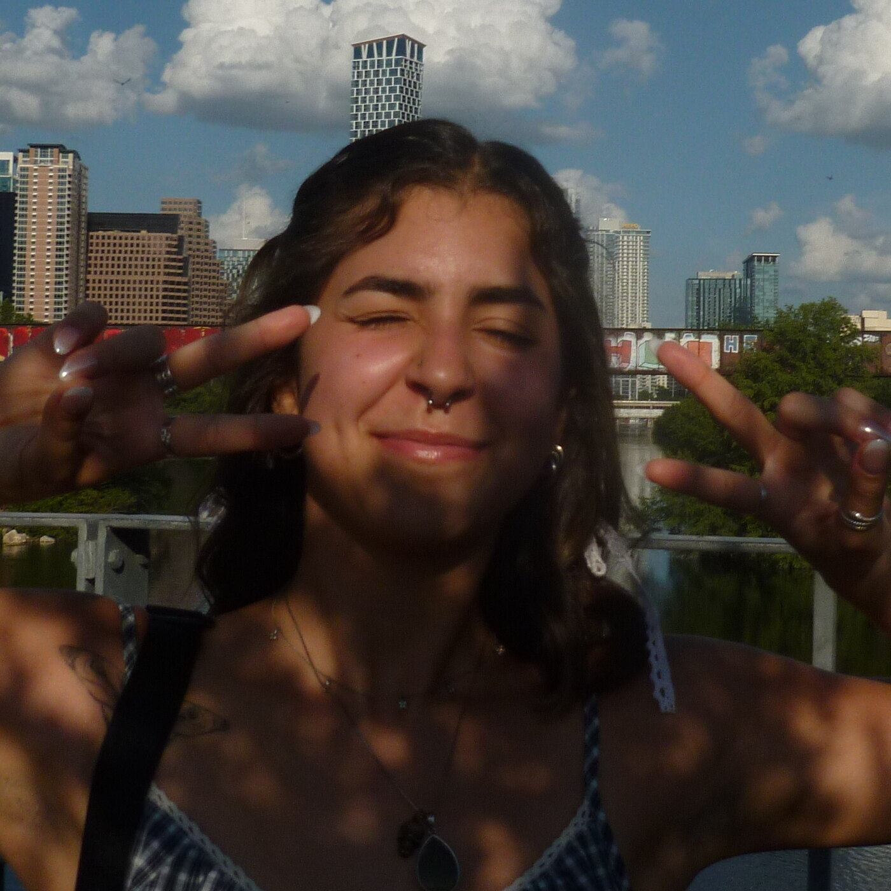
Maria Abreu Rodriguez
Undergraduate researcher
mariapabrer9314 [at] tamu.edu
My name is Maria Abreu Rodriguez, and I am a senior Oceanography major! I am interested in the biological and ecological aspects of our oceans, especially how organisms interact with one another. I am also working on getting a minor in biology to help further my understanding on a deeper level. When I’m not studying I love to spend my time baking and testing new recipes, going to concerts, or swimming with the TAMU swim club.
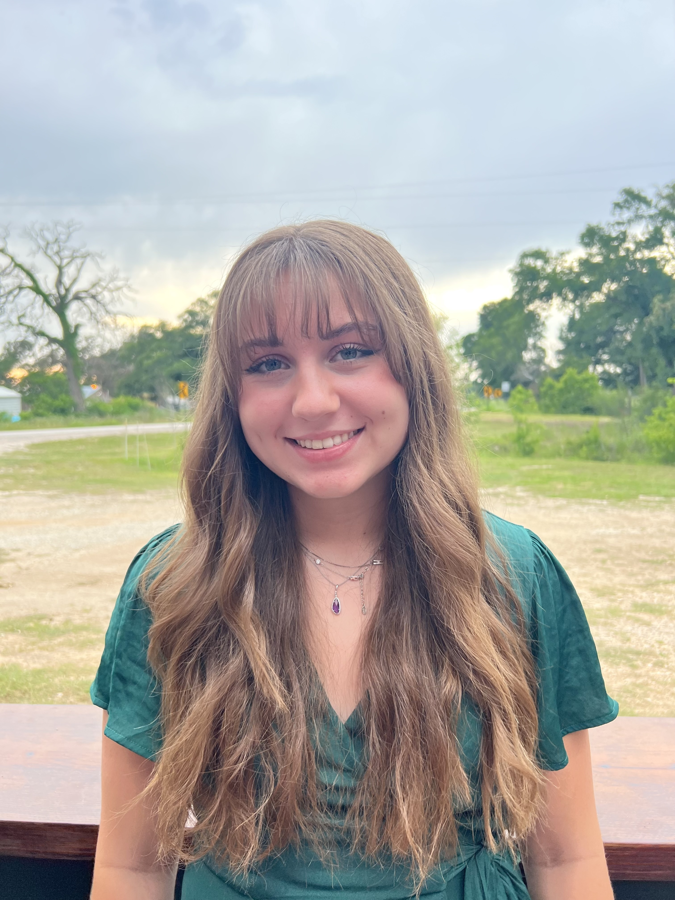
Meagan Sonsel
Research assistant
she/her
Meagan Sonsel graduated with a degree in Environmental Geoscience with a concentration in biosphere, and continues to work in the lab on microbial eukaryotes in the deep sea.
Lab alumni
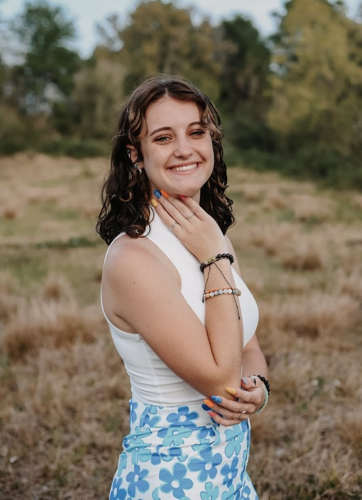
Abby Day
Undergraduate researcher
Environmental Geoscience, B.S.
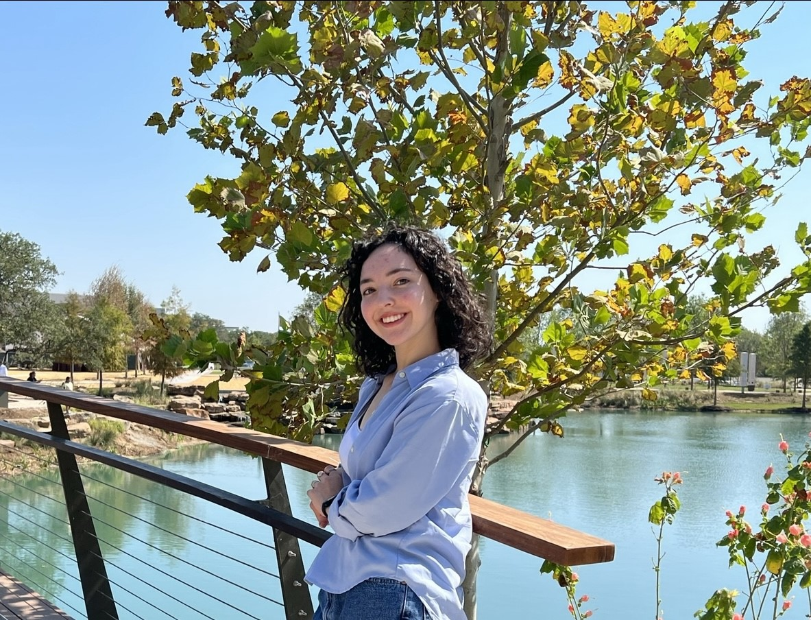
Madeleine Lerma
Undergraduate researcher
Zoology, B.S.
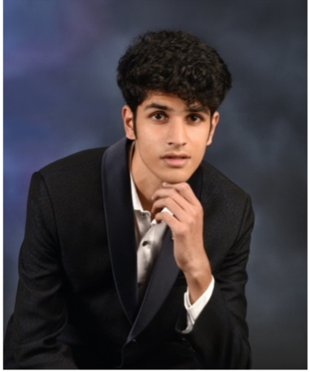
Siddarth Seshampally
Undergraduate researcher
Oceanography
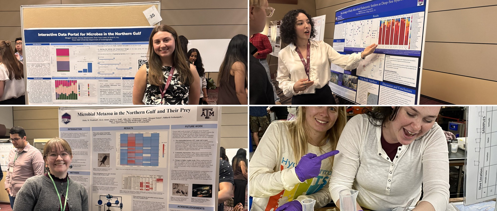
Join us
I do not currently have any open positions for Masters, PhD, or Postdoctoral positions. Watch this space for future opportunities.
PhD opportunities
Texas A&M Graduate program | Apply before January 1
NSF GRFP | Deadline: mid-October
Simons Graduate Fellowship in Ecology & Evolution | Deadline: July
Undergraduate opportunities
If you are a current TAMU undergraduate, contact me directly for the potential to join.
REU program at TAMU | Deadline: February
Postdoctoral opportunities
NSF Ocean Sciences Postdoctoral Research Fellowships | Deadline: May & November
C-COMP Postdoctoral Fellows | Deadline: mid-April
Simons Foundation Postdoctoral Fellowship in Marine Microbial Ecology | Deadline: mid-May